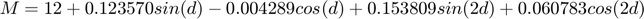

Contents
Solar Elevations and Times of Sunrise and Sunset
Author: Ryan Gamble
Date: 08-Mar-2017
Assignment: Solar elevation project
Description: Prompt a user for values of altitude, latitude, longitude, and date. Use this input to generate and display time of sunrise and sunset values, as well as solar elevation values for the daylight hours of the given location.
clear all; % Removes all variables, globals, functions and MEX links clc; % Clears the command window close all; % Closes all of the open figure windows format short; % Reset to MATLAB's default format
Main Code
COLLECT USER INPUT
First the user is prompted for date in monthes and days, as well as the altitude, latitude, and longitude for the location of interest. For the calculations made later, the month and day values must be converted to the corresponding value for the day number out of the year (January first being 1). This is accomplished using the function modatoday().
%mo = input('Enter the month of the date to view(1-12): '); %da = input('Enter the day of the date to view(1-31): '); %z = input('Enter the altitude of the location to view(in km): '); %la = input('Enter the latitude of the location to view(in degrees): '); %lo = input('Enter the longitude of the location to view(in degrees): '); %Convert the month and day values to day number of year %day = modatoday(mo, da);
FOR DEMONSTRATION PURPOSES
mo = 1; %January, da = 1; %The first z = 55; %Altitude of 55km la = 39; %Latitude of 39 lo = 77; %Longitude of 77 %Find the day value for January, 1 day = modatoday(mo, da);
SUNRISE AND SUNSET TIMES THROUGHOUT THE YEAR
The time of sunrise and sunset are calculated by the equations
Where L is longitude, M is the time of meridian passage, and H is the time corresponding to the solar hour angle for when the sun crosses the horizon. This makes the length of day light from M-H to M+H at a given longitude.
The function calc_srss() is used to calculate time of sunrise and sunset and it requires an input of altitude(z) and latitude(la) so that the solar hour angle(H) can be found for each day of the year. An input of longitude(lo) is required for the equation of sunrise and sunset times. The calc_srss() function outputs a list of the day numbers (1-365) converted to the angular fraction of the year values stored as the variable num. The num varibale is used heavily when calculating solar declination(D) as well as M inside the function. The other two outputs are times of sunrise and sunset for each day of the year in hours. Once the outputs are collected, they can be used to create two plots, the first representing time of sunrise for each day of the year, and the second for times of sunset for each day of the year.
figure(1) %Calculate the time of sunrise and sunset for each day in a year at a given %altitude, latitude, and longitude [num, Tsr, Tss] = calc_srss(z, la, lo); %Sunrise plot subplot(1,2,1) plot(num, Tsr, '-k', 'Linewidth', 2) %Format plot set (gca, 'Fontsize', 8) title('Time of Sunrise for each Day of the Year') xlabel('Day of the Year') ylabel('Time of Sunrise [Hours]') %Sunset plot subplot(1,2,2) plot(num, Tss, '-k', 'Linewidth', 2) %Format plot set (gca, 'Fontsize', 8) title('Time of Sunset for each Day of the Year') xlabel('Day of the Year') ylabel('Time of Sunset [Hours]')
SOLAR ELEVATION DURING DAYLIGHT HOURS FIGURE
Solar elevation for a given day of the year can be found using the equation
Where is the solar elevation angle, is the latitude, D is the solar declination for a given day, and h the solar hour angle as a function of longitude and M for a given day.
The function calc_se is used to calculate the solar elevation for each day of the year for the hours from sunrise to sunset at a given latitude and longitude. Latitude is used in the equation for solar elevation and longitude is used to calculate the solar hour angle. The time of sunrise and sunset for the given day are used to calculate a set of h values for each hour between the two times, then those h values are used to calculate the correpsonding set of solar elevations. The day number is used to calculate D and M as needed within the function. The output of this function is a set of times and the corresponding solar elevation for that time and location. This data can be used to create a plot of solar elevation for the day light hours of a day as shown below. In our example this is the solar elevation for January, 1 at a latitude of 39 degrees and a longitude of 77 degrees.
figure(2) %Calculate the solar elevation at a given latitude and longitude for the %daylight hours of a given day [t, se] = calc_se(la, lo, Tsr(day), Tss(day), day); plot(t, se, '-k', 'Linewidth', 2) %Format plot set (gca, 'Fontsize', 10) title('Solar Elevation during Daylight Hours') xlabel('Hours of Day from Sunrise to Sunset [Hours]') ylabel('Solar Elevation [Degrees]')
FIND SOLAR ELEVATION FOR EACH DAYLIGHT HOUR IN THE YEAR
To find the solar elevation for every day light hour of the year at a given latitude and longitude the previous functions are used in a repetition structure that runs calc_se() for each day of the year and records all of the daylight hours found from time of sunrise to sunset for each day at the given location, the day numbers associated with each time, and the solar elevation at that time.
T = []; %Create a data set for daylight hours of a year Days = []; %Create a data set for cooresponding day numbers for each time Se = []; %Create a data set for solar elevation at each time for i = 1:365 %Loop for each day of the year [ti, sei] = calc_se(la, lo, Tsr(i), Tss(i), i); %Run calc_se each loop ti = dectohm(ti); %Convert time to GMT days = i.*ones(1, length(ti)); %Find the size of days Days = [Days days]; %Append days T = [T ti]; %Append times Se = [Se sei]; %Append solar elevation end
PRINT RESULTS TO A FILE
Once all of the calculations have been completed, the analyzed data can be written to a text file. Here the data being written is one file of solar elevation angles for each hour of daylight in the year for the user input location. Another file contains the time of sunrise and sunset for each day of the year at the user input location.
% Print solar elvation angles for each daylight hour of the year to a file file_setxt = fopen('solar_elevation.txt', 'wt'); fprintf(file_setxt, 'Altitude:%6.2f Latitude:%6.2f Longitude:%6.2f\n',... z, la, lo); fprintf(file_setxt, 'Day \t Time \t Elevation Angle\n'); fprintf(file_setxt, '%4.0f \t %5.0f \t %7.2f\n', [Days;T;Se]); Tsr = round(dectohm(Tsr)); %Converts time of sunrise to GMT Tss = round(dectohm(Tss)); %Converts time of sunset to GMT % Print the sunrise and sunset times for each day in a year to a text file file_srsstxt = fopen('sunrise_sunset_times.txt', 'wt'); fprintf(file_srsstxt, 'Altitude:%6.2f Latitude:%6.2f Longitude:%6.2f\n',... z, la, lo); fprintf(file_srsstxt, 'Day \t Sunrise \t Sunset\n'); fprintf(file_srsstxt, '%4.0f \t %5.0f \t\t %5.0f\n', [num;Tsr;Tss]);
CALCULATIONS NOT SHOWN
Here are some of the formulas used within the main functions.
D represents the solar declination, or the angle from the sun to the center of the earth as a function of \sigma shown below.
\sigma is related to d according to the equation above.

d represents the angular fraction for the day out of the year. In other words, a value associated with how far through the year does each day represent. This is important because solar elevation angles are different throughout the year even at the same geographic location so it is important to specify the angular fraction of the year using d.
h represents the solar hour angle, or the angle from the sun to the earth at the time of sunrise or sunset for a given day and longitude. It is used when calculating solar elevation.

M is the time of meridian passage for a given day and must be used to find the time of sunrise and sunset for a given day and location. M represents the time that the sun directly overhead a location, or solar noon.
H also reprents the solar hour angle but instead of being an angle like h, it is a time in hour minutes that represents the time from sunrise to M and from M to sunset.
A represents the sunrise/sunset solar elevation angle and is a function of altitude(z). This is used when calculating H for the calculation of sunrise and sunset.